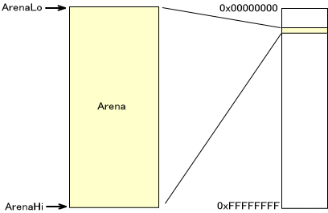
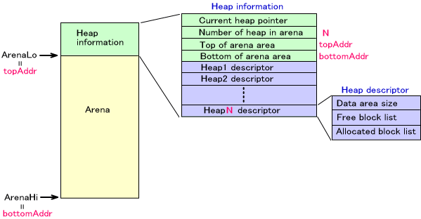
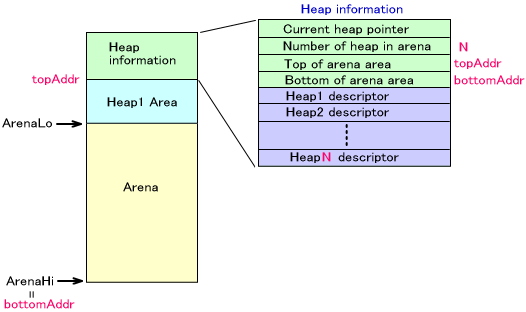
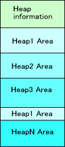
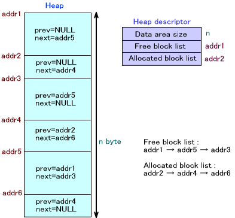
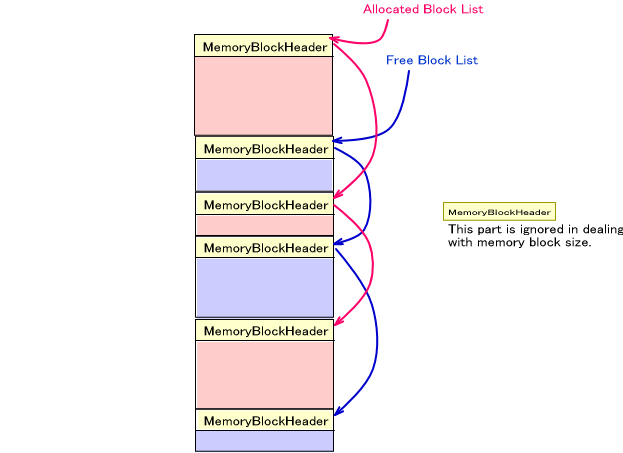

(便宜上、このページのメモリマップ図は、上を下位アドレス、下を上位アドレスとしています)
初期化
NitroSDKでは、アリーナ上にヒープシステムを構築して、ゲームで使用するメモリブロックの割り当てや開放を行なうことが出来ます。OS_InitArena() で初期化が終わったばかりのアリーナは、アリーナ境界を表す ArenaLo ポインタは領域先頭を差し、ArenaHi
ポインタは領域末尾を差しています。

メモリ割り当てシステムは複数あるアリーナそれぞれに対して作成することが可能です。また、一つのアリーナには複数のヒープ領域を設定することが可能です。
上図の状態のアリーナに対し OS_InitAlloc() でメモリ割り当てシステムの初期化を行なうと、下図のようにさきほどまでアリーナ領域だったメモリの最下位部分にヒープの情報ブロックが作成されます。OS_InitAlloc() の返り値を使って、アリーナの境界アドレス ArenaLoアドレスは情報ブロックの分だけずらす必要があります。
一つのアリーナに作成できる最大ヒープ数は OS_InitAlloc() の引数で指定しておく必要があります。これはヒープの情報ブロックの中に、最大数分のヒープデスクリプタが予め作成されるからです。ヒープデスクリプタには下図のようにデータ領域のサイズ、フリーブロックの先頭のアドレス、使用ブロックの先頭のアドレスが格納されます。

なお、メモリ割り当てシステムの情報を破棄するには、OS_ClearAlloc() を呼んでください。
ヒープの作成
ヒープを作成するには OS_CreateHeap() を呼んでください。このとき、ヒープに使用する領域を指定します。領域は図中の topAddr から bottomAddr の範囲内になければなりません。
ヒープが作成されると、ヒープデスクリプタにはヒープの情報が格納されます。

ヒープの破棄・再初期化
作成したヒープを破棄するときは OS_DestroyHeap() を呼んでください。但し、これによって ArenaLo や ArenaHi のポインタは変化しません。
ヒープを再初期化するときは OS_ClearHeap() を呼んでください。
カレントヒープ
アリーナごとに、カレントヒープを設定することが出来ます。カレントヒープを設定しておくと、いくつかのマクロ関数でヒープハンドルを指定する必要がなくなります。また、ヒープハンドルを指定する関数であっても、OS_CURRENT_HEAP_HANDLE でヒープを指定することが出来るようになります。
カレントヒープを設定する関数は OS_SetCurrentHeap() です。
ヒープの拡張
一旦ヒープを作成した後、ヒープ領域を拡張することが出来ます。拡張される領域を指定して OS_AddToHeap() を呼んでください。
一旦拡張されたヒープ領域は、ヒープを破棄するまで別の用途に使用しないで下さい。
OS_AddToHeap() によって、次のようにヒープの"飛び地" が発生する可能性があります。

メモリブロックの確保
ヒープからメモリブロックを確保する関数として OS_AllocFromHeap() が用意されています。この関数は、アリーナを指定する必要がありますが、簡便化のためにアリーナ名を関数名に含んだマクロが用意されています。詳しくは OS_AllocFromHeap() のリファレンスを参照してください。
また、領域を指定してメモリブロックを確保するための関数 OS_AllocFixed()も用意されています。この関数で確保したメモリブロックはヒープ管理から除外されます。従って、この関数で確保したメモリブロックを引数として OS_AddToHeap() で他のヒープを拡張しても構いません。
メモリブロックの解放
確保されていたメモリブロックを解放する関数として OS_FreeToHeap() が用意されています。この関数は、アリーナを指定する必要がありますが、簡便化のためにアリーナ名を関数名に含んだマクロが用意されています。マクロについては OS_FreeToHeap() のリファレンスを参照してください。
また、すべてのメモリブロックを解放する関数 OS_FreeAllToHeap() も用意されています。こちらもアリーナ名を関数名に含んだマクロが用意されています。マクロについては OS_FreeAllToHeap() のリファレンスを参照してください。
メモリブロックの管理方法
ヒープはフリーメモリ、使用中メモリの両方ともブロック単位で管理されていて、双方向リストでリンクされています。ヒープを作成した直後は、ヒープ用の全ての領域をフリーブロックとみなします。
データエリアのサイズはヒープ用に確保した領域の大きさが入ります。通常の使用ではこの値は変化しませんが、OS_AllocFixed() を行なったときに、指定の領域が含まれるヒープでは、そのブロック分の大きさが減少します。また、このヒープに元々含まれていたものではないメモリブロックを
OS_AddToHeap() で追加したときに、そのブロック分大きさが増加します。
次の図は、ある時点のヒープとヒープデスクリプタの状態です。この例では、FreeBlockList が addr1 を差しており、そこから next リンクを辿ると この addr1 と、addr5 と addr3 から始まるブロックが空き領域であることがわかります。同様に Allocated Block List を辿ると、addr2 と addr4 と addr6 から始まるブロックが使用中であることがわかります。

メモリブロックサイズに関する情報
以下の関数が用意されています。
・使用されているメモリブロック(ヘッダサイズ含まない)の合計サイズを取得する関数
OS_GetTotalAllocSize()
・使用されているメモリブロック(ヘッダサイズ含む)の合計サイズを取得する関数
OS_GetTotalOccupiedSize()
・フリーメモリブロックの合計サイズを取得する関数 OS_GetTotalFreeSize()
・フリーメモリブロックの中で最も大きいもののサイズを取得する関数 OS_GetMaxFreeSize()
・メモリブロックを指定して、そのブロックのサイズを取得する関数 OS_ReferentSize()
これらの関数は、メモリブロックのデータが格納される部分についてのみ考慮しています。つまり、メモリを管理する部分のサイズは含みません。合計を取得する関数であっても、データ領域部分だけの合計となります。

デバッグのための関数
ヒープの内容を OS_Printf() を用いて表示する関数 OS_DumpHeap() が用意されています。これはデバッグ用の関数です。
また、ヒープの内容が正当なものかどうかをチェックする関数 OS_CheckHeap() も用意されています。
2005/10/07 OS_GetTotalOccupiedSize() 追加
2005/03/14 リンク先のミスを訂正
2005/03/03 リンク先のミスを訂正
2004/12/13 用語や語尾など修正
2004/10/26 初版